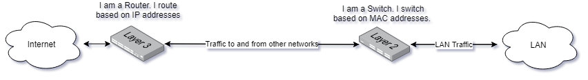
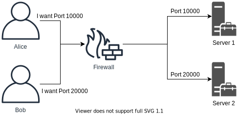

Cyber Security In-Depth Network Layer
IP - The Internet Protocol
IP is used to communicate across networks, not just across physical links, but between networks of routers. The addressing scheme in use is either IPv4 ("IP Version 4") or IPv6 ("IP Version 6").
IP networks can be broken into different sections, often called subnets. This is accomplished by adding an extra piece of information, together with the IP address, called a netmask. The netmask dictates how large a network is and which packet is routed within the network and which should be routed outside of the network.
Netmasks can be represented via decimal numbers or with a slash notation. When using slash notation, the slash follows the systems IP address. Here are some examples:
| IP Address | Slash Notation | Netmask |
|---|---|---|
| 10.0.0.1 | /8 - Example: 10.0.0.1/8 | 255.0.0.0 |
| 172.16.1.1 | /12 - Example: 172.16.1.1/12 | 255.240.0.0 |
| 192.168.0.1 | /16 - Example: 192.168.0.1/16 | 255.255.0.0 |
| 192.168.0.1 | /24 - Example: 192.168.0.1/24 | 255.255.255.0 |
Some IP networks are reserved for only a certain kind of traffic. The IP addresses in the table above are reserved for only internal organizational use, meaning they should not be routed on the Internet. These kinds of IP addresses are commonly referred to as RFC1918 addresses.
Different Networks
\Let us take a look at different networks within RFC1918 and how large the networks are:
- 10.0.0.0/8 - More than 16 million IP addresses
- 172.16.0.0/12 - About 1 million IP addresses
- 192.168.0.0/16 - 65534 IP addresses
IP segments can be further broken up into smaller and more granular networks.
Each network has a reserved address for broadcasting traffic to every host in the network, this is called the broadcast address. Broadcasting data means sending data to everyone on the network instead of sending to just a single host. There are many applications and protocols which rely on broadcasting traffic in order for them to work.
For each network segment the broadcast is always last IP address in the network. For example in the network 192.168.0.0/24 network, the broadcast address is 192.168.0.255.
The smallest netmask possible is 255.255.255.255, represented as /32. This network only has one IP address.
If traffic needs to be sent back to the host, e.g. for communications between applications, it is sent to the localhost address. This address is always 127.0.0.1 and is a /8 network.
In IP networks the traffic is routed by a router. A router is a networking device which understands the IP format and can forward packets between networks. This is different than a switch as the switch forwards data within a network, while the router forwards between networks.
Packets on the network has headers which describe many of the important details we already discussed within the IP protocol. IPv4 Header looks like this:
 Image Credits: By Michel Bakni - Postel, J. (September 1981) RFC 791, Internet Protocol, DARPA Internet Program Protocol Specification, The Internet Society, p. 11 DOI: 10.17487/RFC0791., CC BY-SA 4.0, https://commons.wikimedia.org/w/index.php?curid=79949694
Image Credits: By Michel Bakni - Postel, J. (September 1981) RFC 791, Internet Protocol, DARPA Internet Program Protocol Specification, The Internet Society, p. 11 DOI: 10.17487/RFC0791., CC BY-SA 4.0, https://commons.wikimedia.org/w/index.php?curid=79949694
The Source Address is the IP address of the system who is sending the packet, and destination is to whom the packet is intended. There are also other fields in the header which is used by the many features of the IP protocol, but which are outside the scope of this introduction class.
You can check your IP address on Windows by running the command ipconfig within a Command Line Window. On Linux this is done with the ip addr show or ifconfig command.
When a computer needs to communicate to something which can not be found on the LAN, it sends traffic to the default gateway as per how the system is configured. The default gateway being a router which is capable of forwarding the traffic to the destination IP address.
NAT ("Network Address Translation")
NAT allows a system accepting connections on a public IP address to map those requests to an internal RFC 1918 IP address or vice versa. Systems which do NAT'ing are typically firewalls and routers.
A typical implementation of NAT is where the external IP address is used as a front for multiple internal IP addresses, and the destination port number is used to decide which server the data should be sent to. This allows internal IP addresses to receive traffic from external systems.
Another very common implementation is allowing internal IP addresses to access the internet with an external IP address. The NAT keeps track of connections from internal to destination addresses and forwards traffic across the connections.
NAT can be configured in many ways, but in this class you we do not go into more details of the method.
Because of the built-in anonymizing features and encryption, the Dark Net is also host of many criminal websites, marketplaces and networks.
Note: NAT allows network engineers to be more flexible with their deployments, allowing many different use-cases to unfold.
IPv6 - IP Version 6
IP version 6 is the latest standard for IP and was made to support more IP addresses. Instead of using 32 bits of addressing for IP addresses, 128 bits is used. This allows for enough IP addresses for the foreseeable future while IPv4 has already run out.
IPv6 addresses uses 8 groups of of 4 hexadecimal numbers. An IPv6 address look like this: 2a00:1450:400f:80a::200e:. Notice it does not have have the 8 groups of 4 hexadecimal numbers. This is because IPv6 addresses can be shortened via simple rules:
- Leading 0's can be shortened
- Double colon (::) can be used to represent a continuous string of 0's.
The expanded IPv6 address is: 2a00:1450:400f:080a:0000:0000:0000:200e.
The localhost can be reduced into ::1 and ::.
IPv6 has networks, i.e. subnets, just like IPv4 has.
The IPv6 header looks like this:
We can see a much simpler header with a lot more room for IP addressing.
IPv6 is used more and more, and there is built in support for this protocol in many tools. For example with ping we can switch between IPv4 and IPv6 with the -4 and -6 flag respectively.
Run ipconfig and see if you see any IPv6 addresses. If you have IPv6 enabled, try ping -6 google.com and ping -4 google.com. See how the command allows us to use either IPv4 or IPv6?
Because of the built-in anonymizing features and encryption, the Dark Net is also host of many criminal websites, marketplaces and networks.
Note: If you do not have IPv6 today, there are many public cloud services which will grant you a public IPv6 address today which you can use to experiment and explore with.
ICMP
ICMP is often associated with Ping and Traceroute. ICMP can be used for other things, such as ask a node for its time referred to as an ICMP Timestamp request. An ICMP Timestamp request simply allows e.g. a Router to ask another Router to synchronize their time, an important attribute in network communications.
A common tactic for attackers to check if systems are available on a network, is to conduct a Ping Sweep. The goal of such activity is to make the target device in a network range reply to ping requests so that the attacker knows it is available. This approach is naive as many systems by default block incoming pings.
Traceroute
Tracerouting is a way to determine which routers are involved in sending a packet from system A to B. Knowing which routers our packets take can be useful both better understanding our networks and also in understanding the attack surface. A router is responsible for routing the package in the right direction. Imagine this as driving on a road, where road signs at intersections guide you to the destination. These signs at intersections represent routers. Traceroute identify these signs and intersections and tells you how far away they are, measured in milliseconds (ms).
The IPv4 TTL and IPv6 Hop Limit headers have the same function. Every router who routes a packet will decrement this value by 1, and if the value reaches 0 the router will discard the packet and return an ICMP Time Exceeded packet to the sender.
To perform a traceroute on Windows:
| tracert google.com |
|---|
To perform a traceroute on Linux (not installed by default):
| traceroute google.com |
|---|
The process of tracerouting via these tools is simple:
- The operating system sends a packet google.com, the TTL value is set to 1.
- The packet is routed on the network, and the first router decrements the TTL by 1, leaving it at 0. This causes the router to drop the packet and send "ICMP Time Exceeded" back to the source.
- The client increases the TTL 1, allowing the packet to be routed through one additional hop.
This process is repeated, increasing the TTL with 1 until the destination has been reached.
DNS ("Domain Name System")
DNS is used to map applications, via names, to IP addresses. For example if you want to use your browser to visit http://google.com, the browser must first make a request to a DNS server to resolve the IP address behind google.com
Systems are typically configured with a primary and secondary domain name server. These settings can be configured manually or be provided by a DHCP server. This allows our computer systems to reach a DNS server for it to resolve for us.
The DNS server is then responsible for resolving the request. It will then proceed to check its own cache to see if it already knows the answer. Each DNS answer can be cached, that is stored temporarily to speed up future requests, for a certain TTL ("Time To Live"). The TTL is typically set to a couple of minutes, for example 10 minutes.
If a DNS server does not have a answer in its cache it will then proceed to check who is responsible for giving the answer. This is done via a recursive process which involves asking a hierarchical system of name servers which inevitably will make the DNS request to end up at the Authoritative Name Server..
You can try to do a DNS lookup with Windows or Linux now. From a command line terminal on Windows type nslookup w3schools.com , or on Linux type dig w3schools.com. You should see output like this:

The IP address of w3schools.com can be seen in the ;; ANSWER SECTION. When this screenshot was captured, the IP address behind the w3schools.com name was 66.29.212.110.
The Authoritative Name Server is the DNS server which is responsible for giving the definitive answer to a question. For example the IP address of google.com will be answered by their authoritative name server, and we can see this server by querying for it:
Finding authoritative name server on Windows:
| nslookup -type=SOA google.com |
|---|
Finding authoritative name server on Linux:
| dig -t SOA google.com |
|---|
DHCP ("Dynamic Host Configuration Protocol")
As the name implies, the DHCP protocol allows any system on a network to reach out to a server and receive a configuration. Such configuration typically implies receiving IP address and network range, default gateway and DNS servers.
DHCP allows for easy management of clients joining and leaving a network.
If you are curious if you are using DHCP right now you can type ipconfig /all on a Windows system and look for "DHCP Enabled: Yes" in the output. Your computer might have multiple network interfaces
VPN ("Virtual Private Network")
A VPN is a system which enables two system to establish encrypted forms for communication, enabling network traffic to be encrypted in transit. Many VPN's is a client to server architecture, allowing the client to access multiple services behind the VPN. VPN's hosted by your work place is also likely to provide access to resources otherwise only accessible from the inside.

Some VPN services are designed for user privacy and encryption for data in transit. These services enables users to send network data via the VPN, effectively masquerading the users IP address when navigating the Internet.
It is generally good practice to use VPN's to secure your network communications, however we should not use any kind of VPN service. Free VPN services can sometimes be malicious, inspecting, reading and storing your sensitive data.